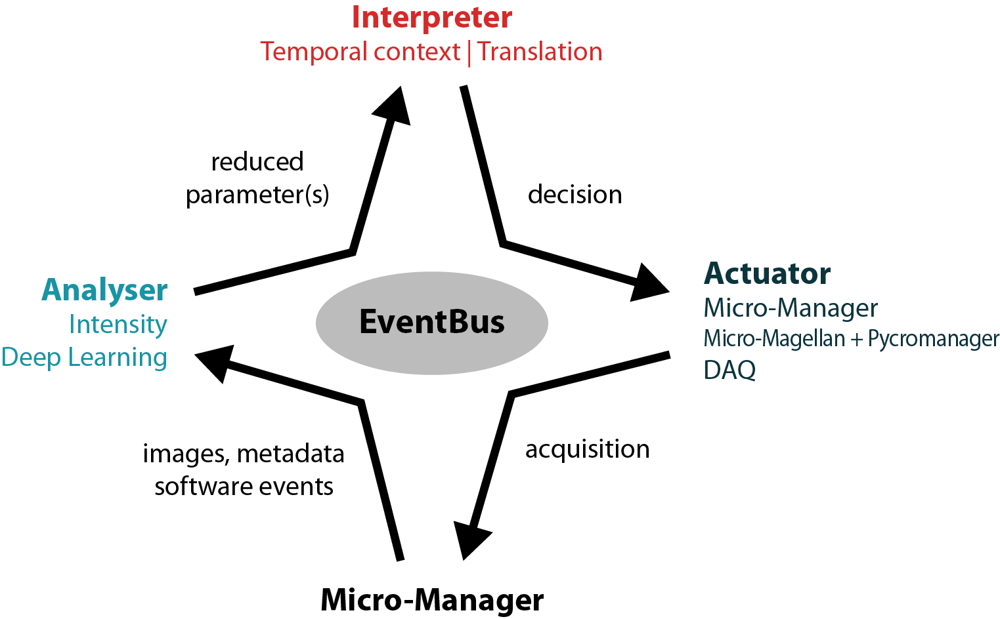

Event-driven acquisitions loops¶
EDA loops consist of three main components:
Additionally there is a communication hub to allow for communication between the components while keep them independent and modular. The implementations described here additionally rely to different levels on Micro-Manager for microscope control.
{kind=link}
EventBus¶
Communication between the components is realized using pyqtSignals and pyqtSlots. Components can
connect to the signals directly on the EventBus
(event_bus.new_image_event.connect(self.start_analysis)). They can post on the EventBus by
connecting their own signals to the corresponding signals on the EventBus
(self.new_decision_parameter.connect(event_bus.new_decision_parameter)). See how the components
are initialized with the EventBus at customloop
The communication between Micro-Manager and the EventBus is realized thanks to pycro-manager.
EventThread and EventListener connect to the PythonEventServer plugin
started in Micro-Manager. For the Actuator implementation based on pycro-manager Acquisitions (PycroAcquisition), this is achieved directly by pycro-manager
and Micro-Magellan.
Analysers¶
eda_plugin.analysers, examples.analysers
Accepting events:
acquisition_started_event(), new_image_event(), mda_settings_event()
Emitting events:
new_decision_parameter()
Interpreters¶
eda_plugin.interpreters, examples.interpreters
Accepting events:
new_decision_parameter()
Emitting events:
new_interpretation()
Actuators¶
eda_plugin.actuators, examples.actuators
Accepting events:
new_interpretation(), acquisition_ended_event()